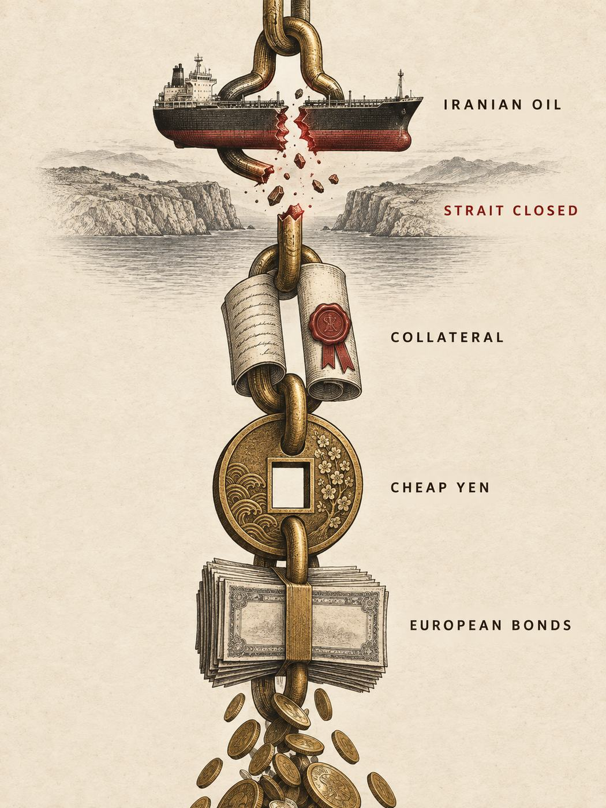

Le « yentervention » et la guerre du collatéralThe "yentervention" and the war over collateral
InterprétationInterpretationTom Luongo, Gold Goats 'n Guns n°108, août 2026Tom Luongo, Gold Goats 'n Guns issue 108, August 2026
La version écrite et chiffrée de la thèse de Luongo. Le Trésor américain a soutenu le yen en vendant des euros ; le carry trade du yen, qui finançait à bas coût les dettes européennes, ne rapporte plus que 1 % sur l'Italie et 0,30 % sur l'Allemagne ; et le pétrole iranien, selon lui, servait de garantie à ces positions. Fermer Ormuz, c'était couper le premier maillon de la chaîne.The written, numerical version of Luongo's thesis. The US Treasury supported the yen by selling euros; the yen carry trade, which funded European debts cheaply, now yields only 1% on Italy and 0.30% on Germany; and Iranian oil, he argues, served as collateral for those positions. Closing Hormuz meant cutting the first link of the chain.

Ce que dit le document
Cette lettre mensuelle est la pièce la plus technique de la section. Elle met par écrit, avec des chiffres et une chronologie, ce que Luongo avait seulement esquissé dans l'entretien du 23 août. Il faut la lire lentement, car elle emboîte quatre mécanismes que l'auteur présente comme une seule histoire : le carry trade du yen, la normalisation monétaire japonaise, la question du collatéral, et la campagne contre l'Iran.
Le cadre : rapatrier le dollar
Luongo place l'intervention dans une lecture d'ensemble de la politique de Trump. Les épisodes que la presse traite séparément, le départ de Maduro au Venezuela, le conflit avec l'Iran, le Groenland, les cartels mexicains, les attaques contre les fondements de l'OTAN, seraient les faces visibles d'une même stratégie : concentrer les États-Unis sur leur hémisphère et se dégager du Moyen-Orient, de l'Europe et de l'Asie centrale. Sous cette surface, l'objectif structurel serait que les États-Unis reprennent le contrôle complet de l'émission des dollars, ce qui suppose d'assécher la source la plus abondante de dollars offshore bon marché : le crédit en yen. Pour cela il fallait un partenaire à Tokyo, et Luongo situe ce tournant en février 2026, avec l'arrivée de Sanae Takaichi à la tête du gouvernement japonais.
L'intervention de fin juillet
Fin juillet 2026, le yen touche un plus bas historique face au dollar. Le secrétaire au Trésor Scott Bessent intervient alors ouvertement, en coordination avec la Réserve fédérale et la Banque du Japon. Le détail qui compte pour Luongo tient en une phrase : Bessent a vendu des euros pour acheter du yen ; « pas des dollars », insiste-t-il. Résultat, le yen s'est redressé face au dollar, mais surtout face à la livre sterling et à l'euro, ce qui aurait ouvertement irrité les partenaires européens. Le contexte immédiat, précise-t-il, est que les deux banques centrales, Fed et BoJ, avaient refusé en juillet les hausses de taux que les marchés réclamaient. Pour la BoJ, le refus est plus discutable : son taux directeur est à 1 %, l'inflation des prix à la consommation à 1,7 %, et l'indice des prix à la production vient de sortir à 7,2 %, ce qui annonce selon lui une accélération de l'inflation. Bessent et le gouverneur Kazuo Ueda ont préféré laisser les marchés des changes et des obligations faire le travail.
Le carry trade, expliqué
Le cœur pédagogique de la lettre est une explication du carry trade. Un carry trade consiste à emprunter dans une monnaie à taux bas pour placer dans une autre à taux plus élevé, et à empocher l'écart. Quand la Banque du Japon garantissait, de 2016 à fin 2021, que le rendement de son obligation à dix ans resterait fixé à 0,1 %, n'importe qui pouvait emprunter des yens à ce prix et acheter de l'obligation italienne à dix ans à plus de 5 %. Un gain de 4,9 % « pour ne rien faire », à condition que le yen ne se renchérisse pas. Pendant deux décennies, écrit Luongo, ce robinet a permis à l'Europe, aux États-Unis, à l'Asie du Sud-Est et même à la Chine d'emprunter en dessous de ce que leur situation aurait justifié : qui achetait l'obligation italienne à 5 % quand elle aurait dû se traiter à 7 ou 8 % ?
La sortie a commencé après la pandémie. La vague d'inflation de 2021 a rendu nerveuse l'épargnante japonaise, la « Mme Watanabe » des analystes, et le gouverneur Kuroda a dû relever le plafond de 0,1 % à 0,5 % en décembre 2022. Son successeur Ueda a ensuite porté le taux directeur à 0,25 %, ce qui a déclenché le « lundi noir » du 5 août 2024 sur les marchés d'actions. Depuis, chaque hausse japonaise fait trembler les commentateurs, parce que tant d'acteurs dépendaient de ce crédit « comme d'une héroïne financière ».
Le bilan japonais, vu autrement
Luongo conteste la lecture pessimiste habituelle du Japon. Le ratio dette/PIB, estimé à 204 % pour l'exercice 2026, a reculé depuis son pic de 233 % en 2020, à mesure que la BoJ réduit son bilan. D'après les déclarations de la banque sur sa politique de portefeuille, près de 20 % de ses 518 000 milliards de yens d'actifs arriveront à échéance dans les deux prochaines années, et environ un tiers d'ici 2030. La BoJ détient aussi des fonds indiciels d'actions japonaises, environ 10 % de son bilan, dont la valeur a fortement monté avec le triplement du Nikkei en trois ans. Et l'épargnante japonaise touche désormais plus de 2,9 % sur l'obligation à dix ans pour une inflation de 1,7 %, ce qui, selon lui, écarte le risque de perte de confiance. Ce que le monde subit, conclut-il, est une contraction structurelle de l'offre mondiale de yens.
Qui est vulnérable ?
Si le crédit japonais bon marché se raréfie, la question devient : qui en dépendait le plus ? La réponse habituelle est « le Japon » ; Luongo répond « ceux qui ont emprunté ». Il rappelle que les banques centrales d'Europe et du Royaume-Uni ont été acheteuses nettes de bons du Trésor américain pendant cinq ans, ajoutant plus de 1 700 milliards de dollars à leurs réserves, à partir du plancher de l'euro en septembre 2021. Surtout, il chiffre l'effondrement des marges du carry trade : l'opération sur l'obligation italienne ne rapporte plus qu'environ 1,07 %, et l'écart sur le Bund allemand est tombé à 0,30 %, après avoir dépassé 2 % pendant une décennie. À trente points de base, le taux de change euro-yen devient le paramètre décisif : la moindre variation efface le gain. D'où, selon lui, l'inquiétude européenne devant les hausses japonaises, et d'où le sens de l'intervention américaine sur ce taux précis.
Il va plus loin : à partir des droits de douane d'avril 2025, la BCE, « très probablement avec l'aide de la Banque d'Angleterre et de la Banque du Canada », aurait construit pour 2026 une double position, vendeuse de yen et vendeuse de dette américaine longue, pour pousser le coût de financement des États-Unis jusqu'au point de rupture. C'est la partie la plus spéculative de la lettre, et l'auteur la présente comme une conviction acquise « après quelques mois de données ».
Le collatéral, et l'Iran
Reste la pièce manquante : pour emprunter des yens, il faut déposer une garantie, et c'est là que l'Iran entre dans le raisonnement. La plus grande part des garanties déposées, précise Luongo, reste faite de bons du Trésor américain ; mais les prix se font à la marge, et le flux marginal qui l'intéresse est le pétrole iranien. Un pays sous sanctions ne peut pas déposer des rials auprès d'une banque japonaise ; il lui faut quelqu'un qui achète, assure ou blanchisse son pétrole, et des circuits bancaires, en particulier aux Émirats, que le Trésor américain s'emploie à fermer. Tant que ces circuits existaient, une cargaison iranienne pouvait servir de gage. Quand Téhéran a « fermé » le détroit d'Ormuz en réponse aux frappes, ses cargaisons n'ont plus pu atteindre le marché ; elles ont cessé d'être un bon collatéral ; le Lloyd's de Londres a suspendu l'assurance maritime dans le détroit pour la première fois en plus de trois siècles ; et les positions adossées à ces garanties ont dû être débouclées, c'est-à-dire vendre des euros et racheter des yens. L'intervention de Bessent a amplifié un mouvement déjà engagé.
Luongo propose enfin une « chronologie alternative » : si l'Iran avait frappé le premier, avec un pétrole à plus de 200 dollars, la valeur du collatéral pétrolier aurait bondi, le double pari contre le yen et contre la dette américaine aurait été gagnant, et une crise financière aurait éclaté avant les élections de mi-mandat, offrant à la BCE l'occasion de déclarer l'urgence, de lancer l'euro numérique et d'achever l'union budgétaire. Il y rattache la cession des Chagos par le gouvernement Starmer, le transfert à l'Espagne du contrôle de la navigation à Gibraltar, le refus des alliés de l'OTAN d'aider aux frappes et la fermeture de l'espace aérien espagnol. Trump aurait gagné cette guerre « en frappant le premier », et Bessent superviserait désormais « l'opération de faillite ».
Ce que les données de juin montrent
La revue de portefeuille du même numéro, dont ce site ne reproduit ni les positions ni les recommandations, apporte un élément factuel de plus. Les données du Trésor américain sur les capitaux internationaux, publiées avec deux mois de retard, montrent pour juin des ventes de bons du Trésor par Hong Kong (16 milliards de dollars), la Chine (26 milliards) et le Japon (26 milliards, pour financer ses interventions sur le yen). Luongo y lit une mécanique précise : la Chine, privée de pétrole iranien et vénézuélien bon marché, doit acheter du pétrole américain en dollars, vend donc des Treasuries à Hong Kong, ce qui affaiblit le dollar de Hong Kong et oblige l'autorité monétaire locale à vendre ses propres réserves pour défendre l'ancrage. Le rendement à dix ans de Hong Kong a monté de 90 points de base depuis le début de la guerre, contre 75 pour l'américain. « Les vrais justiciers obligataires, écrit-il, sont les présidents de banques centrales hostiles ; le reste, ce sont des histoires pour s'endormir. »
What the document says
This monthly newsletter is the most technical piece in the section. It sets out in writing, with figures and a timeline, what Luongo had only sketched in the interview of August 23. It should be read slowly, because it nests four mechanisms the author presents as a single story: the yen carry trade, Japan's monetary normalization, the question of collateral, and the campaign against Iran.
The frame: bringing the dollar home
Luongo places the intervention within an overall reading of Trump's policy. The episodes the press treats separately, Maduro's departure in Venezuela, the conflict with Iran, Greenland, the Mexican cartels, the attacks on NATO's foundations, would be the visible faces of one strategy: focus the United States on its own hemisphere and disengage from the Middle East, Europe and Central Asia. Beneath that surface, the structural goal would be for the United States to regain full control over the issuance of dollars, which requires drying up the most abundant source of cheap offshore dollars: yen credit. For that a partner in Tokyo was needed, and Luongo dates the turning point to February 2026, when Sanae Takaichi became Japan's prime minister.
The late-July intervention
In late July 2026 the yen hits a record low against the dollar. Treasury Secretary Scott Bessent then intervenes openly, in coordination with the Federal Reserve and the Bank of Japan. The detail that matters to Luongo fits in one sentence: Bessent sold euros to buy yen; "not dollars," he insists. As a result the yen recovered against the dollar, but above all against the pound and the euro, which he says openly irritated the European partners. The immediate context, he notes, is that both central banks, Fed and BoJ, had refused in July the rate hikes markets were demanding. For the BoJ the refusal is more debatable: its policy rate is at 1%, consumer inflation at 1.7%, and the producer price index has just come in at 7.2%, which in his view announces an acceleration of inflation. Bessent and Governor Kazuo Ueda preferred to let the currency and bond markets do the work.
The carry trade, explained
The pedagogical core of the newsletter is an explanation of the carry trade. A carry trade consists of borrowing in a low-rate currency to invest in a higher-rate one, and pocketing the difference. When the Bank of Japan guaranteed, from 2016 to the end of 2021, that the yield on its ten-year bond would stay fixed at 0.1%, anyone could borrow yen at that price and buy Italian ten-year bonds at over 5%. A gain of 4.9% "for doing nothing," as long as the yen did not strengthen. For two decades, Luongo writes, this tap let Europe, the United States, Southeast Asia and even China borrow below what their situation would have justified: who was buying Italian bonds at 5% when they should have traded at 7 or 8%?
The exit began after the pandemic. The inflation wave of 2021 made the Japanese saver nervous, the analysts' "Mrs. Watanabe," and Governor Kuroda had to lift the cap from 0.1% to 0.5% in December 2022. His successor Ueda then raised the policy rate to 0.25%, which triggered the "Black Monday" of August 5, 2024 in equity markets. Since then every Japanese hike rattles commentators, because so many players depended on that credit "like financial heroin."
Japan's balance sheet, seen differently
Luongo disputes the usual pessimistic reading of Japan. The debt-to-GDP ratio, estimated at 204% for fiscal 2026, has fallen from its 2020 peak of 233% as the BoJ shrinks its balance sheet. According to the bank's statements on its portfolio policy, nearly 20% of its ¥518 trillion in assets will run off over the next two years, and about a third by 2030. The BoJ also holds Japanese equity index funds, about 10% of its balance sheet, whose value has risen sharply with the Nikkei nearly tripling in three years. And the Japanese saver now earns more than 2.9% on the ten-year bond against inflation of 1.7%, which in his view rules out a loss of confidence. What the world is going through, he concludes, is a structural contraction of the global supply of yen.
Who is vulnerable?
If cheap Japanese credit becomes scarce, the question becomes: who depended on it most? The usual answer is "Japan"; Luongo answers "those who borrowed." He recalls that the central banks of Europe and the United Kingdom were net buyers of US Treasuries for five years, adding more than $1.7 trillion to their reserves, starting from the euro's floor in September 2021. Above all, he puts numbers on the collapse of carry trade margins: the Italian bond trade now yields only about 1.07%, and the spread on the German Bund has fallen to 0.30%, after exceeding 2% for a decade. At thirty basis points the euro-yen exchange rate becomes the decisive parameter: the slightest move wipes out the gain. Hence, in his view, the European anxiety about Japanese hikes, and hence the meaning of the American intervention on that precise rate.
He goes further: from the tariffs of April 2025 onward, the ECB, "very likely with the help of the Bank of England and the Bank of Canada," would have built for 2026 a double position, short the yen and short long-dated American debt, to push the cost of funding the United States to the breaking point. This is the most speculative part of the newsletter, and the author presents it as a conviction reached "after a few months of data."
Collateral, and Iran
That leaves the missing piece: to borrow yen you must post collateral, and this is where Iran enters the reasoning. Most posted collateral, Luongo specifies, remains US Treasuries; but prices are set at the margin, and the marginal flow that interests him is Iranian oil. A sanctioned country cannot post rials with a Japanese bank; it needs someone to buy, insure or launder its oil, and banking channels, in the UAE above all, that the US Treasury is working to close. As long as those channels existed, an Iranian cargo could serve as a pledge. When Tehran "shut down" the Strait of Hormuz in response to the strikes, its cargoes could no longer reach the market; they ceased to be good collateral; Lloyd's of London suspended marine insurance through the Strait for the first time in more than three centuries; and the positions backed by those guarantees had to be unwound, meaning sell euros and buy back yen. Bessent's intervention amplified a move already under way.
Luongo finally proposes an "alternate timeline": had Iran struck first, with oil above $200, the value of oil collateral would have jumped, the double bet against the yen and against American debt would have paid off, and a financial crisis would have broken out before the midterm elections, giving the ECB the opportunity to declare an emergency, launch the digital euro and complete the fiscal union. He ties to this the Starmer government's handover of the Chagos Islands, the transfer to Spain of navigational control at Gibraltar, the NATO allies' refusal to help with the strikes and the closure of Spanish airspace. Trump would have won this war "by going first," and Bessent would now be overseeing "the bankruptcy operation."
What the June data show
The portfolio review in the same issue, whose positions and recommendations this site does not reproduce, adds one more factual element. US Treasury data on international capital flows, published two months late, show for June sales of Treasuries by Hong Kong ($16 billion), China ($26 billion) and Japan ($26 billion, to fund its yen interventions). Luongo reads a precise mechanism into them: China, deprived of cheap Iranian and Venezuelan oil, must buy American oil in dollars, so it sells Treasuries in Hong Kong, which weakens the Hong Kong dollar and forces the local monetary authority to sell its own reserves to defend the peg. Hong Kong's ten-year yield is up 90 basis points since the war began, against 75 for the American one. "The real bond vigilantes," he writes, "are hostile central bank presidents; the rest is bedtime stories."
Vérifiable, ou pas
Socle documenté
- L'intervention coordonnée sur le yen fin juillet 2026, et les niveaux cités pour le taux directeur japonais, l'inflation et les prix à la production, tous publiés par les autorités japonaises.
- La trajectoire de la politique monétaire japonaise : contrôle de la courbe des taux de 2016 à 2021, relèvement du plafond en décembre 2022, hausse d'août 2024 et « lundi noir », réduction du bilan en cours.
- La compression des écarts de rendement entre le Japon et l'Europe, mesurable sur n'importe quelle plateforme de données de marché.
- Le retrait de l'assurance maritime du Lloyd's dans le détroit d'Ormuz, la ligne de swap accordée aux Émirats, les mesures du Trésor contre des circuits financiers iraniens.
- Les ventes de bons du Trésor par Hong Kong, la Chine et le Japon dans les données officielles de juin, et la hausse des rendements à Hong Kong.
- La cession des Chagos, l'accord sur Gibraltar, la position espagnole sur son espace aérien : des faits, dont l'interprétation reste ouverte.
Reste à démontrer
- Que le pétrole iranien ait effectivement servi de garantie dans des opérations de carry trade en yen, à une échelle suffisante pour peser sur les prix : aucune donnée publique ne le montre, et Luongo lui-même le présente comme un raisonnement « net », à la marge.
- Que la BCE, la Banque d'Angleterre et la Banque du Canada aient construit ensemble une position vendeuse de yen et de dette américaine : c'est une inférence à partir des prix, sans document à l'appui.
- Que la campagne contre l'Iran ait été conçue pour assécher ce collatéral ; cet effet peut aussi n'être qu'une conséquence parmi d'autres.
- La « chronologie alternative » tout entière, y compris l'idée d'une provocation britannique qui aurait précédé une frappe iranienne : c'est un scénario contrefactuel, invérifiable par nature.
- Le lien causal entre les décisions britanniques et espagnoles (Chagos, Gibraltar, espace aérien) et une stratégie financière coordonnée.
Checkable, or not
Documented base
- The coordinated yen intervention in late July 2026, and the levels cited for Japan's policy rate, inflation and producer prices, all published by the Japanese authorities.
- The path of Japanese monetary policy: yield curve control from 2016 to 2021, the cap lifted in December 2022, the August 2024 hike and "Black Monday," the balance sheet reduction under way.
- The compression of yield spreads between Japan and Europe, measurable on any market data platform.
- Lloyd's withdrawal of marine insurance in the Strait of Hormuz, the swap line granted to the UAE, the Treasury's measures against Iranian financial channels.
- The sales of Treasuries by Hong Kong, China and Japan in the official June data, and the rise in Hong Kong yields.
- The Chagos handover, the Gibraltar agreement, Spain's stance on its airspace: facts whose interpretation remains open.
Still to be shown
- That Iranian oil did serve as collateral in yen carry trades, on a scale large enough to move prices: no public data shows it, and Luongo himself presents it as a "net" argument, at the margin.
- That the ECB, the Bank of England and the Bank of Canada together built a position short the yen and short American debt: this is an inference from prices, with no supporting document.
- That the Iran campaign was designed to drain that collateral; this may also be one effect among others.
- The entire "alternate timeline," including the idea of a British provocation that would have preceded an Iranian strike: it is a counterfactual scenario, unverifiable by nature.
- The causal link between British and Spanish decisions (Chagos, Gibraltar, airspace) and a coordinated financial strategy.
Lecture critique
Ce document est la meilleure porte d'entrée dans la méthode de Luongo, parce qu'on y voit ce qu'elle apporte et où elle s'arrête. Ce qu'elle apporte : une attention à des variables que le commentaire politique ignore, les écarts de rendement, les taux de change croisés, la qualité du collatéral, les données de détention de la dette. Chacun de ces éléments est vérifiable, et en grande partie vérifié. Sa description du carry trade et de la normalisation japonaise est conforme à ce que l'on trouve dans la presse financière spécialisée, et sa lecture du bilan de la BoJ, à contre-courant du pessimisme habituel, mérite d'être discutée sur ses chiffres.
Où elle s'arrête : au moment où les prix deviennent des intentions. Que les positions de carry trade aient été débouclées pendant la crise d'Ormuz est probable ; qu'elles aient été adossées au pétrole iranien, et que cette dépendance ait été la cible d'une stratégie américaine, sont deux hypothèses successives dont chacune demande des preuves que la lettre ne fournit pas. Une lecture concurrente explique les mêmes mouvements sans plan : un choc pétrolier, des différentiels de taux qui se referment, des positions à effet de levier qui se dénouent dans le désordre, un Trésor qui puise dans ses réserves en euros parce que c'est la ressource dont il dispose pour acheter du yen sans créer de dollars. Le lecteur n'a pas besoin de trancher ; il lui suffit de savoir quelle partie du récit est mesurée et quelle partie est déduite. Le garde-fou n°2 donne le critère : Luongo dit ce qui le ferait changer d'avis, par exemple le retour des acheteurs sur la dette américaine avant le sommet avec Xi Jinping, et c'est ce qui distingue sa thèse d'un récit fermé.
Deux remarques pour finir. La lettre nomme son adversaire « Davos », étiquette commode qui regroupe des institutions et des intérêts très divers ; le garde-fou n°6 invite à remplacer, chaque fois que possible, l'étiquette par les acteurs précis et les décisions datées. Et le même numéro contient un éditorial sévère pour Trump, dont le goût pour « gérer le chaos qu'il crée » serait un défaut « peut-être fatal » dans l'exécution de sa stratégie. L'auteur n'est pas un simple partisan, ce qui rend sa thèse plus intéressante, sans la rendre plus vraie.
Critical reading
This document is the best entry point into Luongo's method, because it shows both what the method contributes and where it stops. What it contributes: attention to variables political commentary ignores, yield spreads, cross exchange rates, the quality of collateral, data on who holds the debt. Each of these elements is verifiable, and largely verified. His description of the carry trade and of Japan's normalization matches what one finds in the specialized financial press, and his reading of the BoJ's balance sheet, against the usual pessimism, deserves to be argued on its numbers.
Where it stops: at the moment prices become intentions. That carry trade positions were unwound during the Hormuz crisis is likely; that they were backed by Iranian oil, and that this dependence was the target of an American strategy, are two successive hypotheses, each requiring evidence the newsletter does not provide. A competing reading explains the same moves without a plan: an oil shock, rate differentials closing, leveraged positions unwinding in disorder, a Treasury drawing on its euro reserves because that is the resource it has for buying yen without creating dollars. The reader does not need to decide; it is enough to know which part of the story is measured and which part is inferred. Guardrail 2 gives the criterion: Luongo says what would change his mind, for example the return of buyers to American debt before the summit with Xi Jinping, and that is what separates his thesis from a closed narrative.
Two closing remarks. The newsletter names its adversary "Davos," a convenient label that bundles together very diverse institutions and interests; guardrail 6 invites replacing the label, wherever possible, with precise actors and dated decisions. And the same issue contains an editorial harsh on Trump, whose taste for "managing the chaos he creates" would be a "possibly fatal" flaw in the execution of his strategy. The author is no mere partisan, which makes his thesis more interesting, without making it more true.